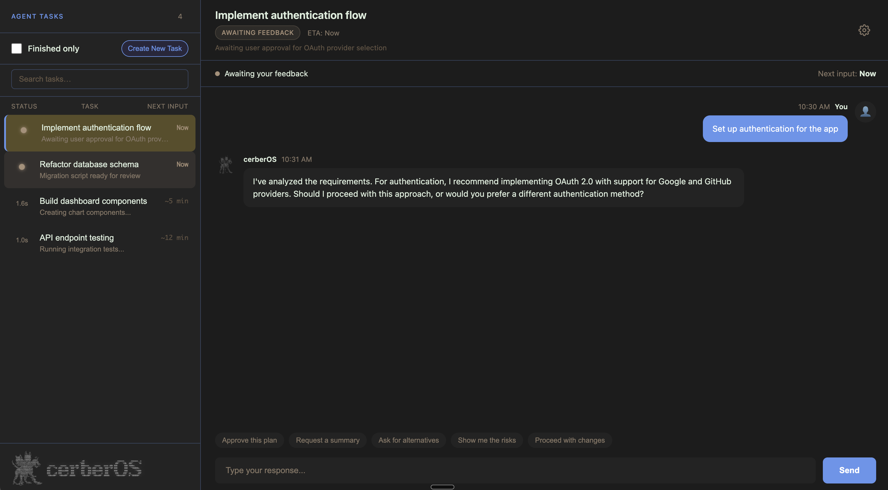

.'
'[" :<
',|^ ?I,
` : }}'^ '`(:.,
[i i;ncvYucYrf<,
>l .]^I /JJUJUUUUUJn
!U?<[(nf/ ,I fJYYYUUUUXYn ";.
.xYUUUUXC/-nl ;JUZ#hLUUQkdJ~ "^?' '.
tYYUU0OUJJJv- jvQqqLUUOhqc: ., ,< <]'
+hwUUp%aCCJUXU{ ']v{uYUYUUun) '}riIj/t|`
l 'vOJULLUn{YctJY^l|f|jO1^lJt[; .<uUJUJCXJY|`
^{ \xvUYJc+I)1fLu}1]{{(nn[tn[];][zUYUUUUCJZ*0,
\; :: 1LCn~!f|(rJ11/{|]~_~[]]i{\\t1\YCUUJuxJqZ('
;rI "|(nux~!xv(//}\fY/(||?}][[/{f|/f?)vJJc; -xYCvi
:f}^ ."-++1|(})|]f/CJU\jt/t(trc{ftcrf}{XJ(< >1vC|l'
_t1I ,?]~I"(1juUJJUJccXftf/Yr)fvLU)f_>vn-" .~/_+.
.+tr}: ,|(cLJUUUJXJXf/xQ/(uLY\-. ;rzj?I`:
inUu/+<[uXr\fzJUJJUUJztYU\uJr}~ ;?l`
cJUXUUJJCJvrXJUUUUJUvJXXCn(xX^
]UUUUUUYXJJCJYYUJUUUUJUJJUrtXJ>
^|JUYJUUUUccYYUztuJUUUUUJUJzt/cc;
>zUUYrUJYXJUXvujtf/UUJJJJUJJftrYv<
tJYJYttzCnfJJCYtj)\CYXuxYJz)|jUJY^
<JUJUj)_j|/LUUnt1[tjft/tf\i(frJJ|
`XUUJni .ivJJr{[)jftfft(+ [ttuXl .
.cJYJu, >JUJY_(t\\\|)i. ~//rX/l
_rUJJ< IYUUJ?^1\|||\< l\rYJU[
;t/jx? :zUUz" `)tftt~ l(tuYJ}
?tt{l 'rUU} . l//t+ '~|tuJ1`
>t/! /JJf lt/i -//nXcI
~t|: .\xnj. ;\t? li-tXUr`
1t) lt//\~ '{t[" . ')xUUv<`.
`|tt< `(///}f~ `]\t\))[~l . }YcJUYcj1I"`
`r///|l ;j/rjnj/, .;-/\\/1` !!__xUXYXXJxI
<i[+?; cucw|o(C_ . .,;+)~{-^
` li +' `
Input/Output Surface Architecture
Stefan Goettsch · Jasper Hall
Midterm 2026
Web surface for interacting with the cerberOS orchestrator

Where the IO Layer fits in the cerberOS architecture
The IO API Server is the central gateway between all surfaces and the orchestrator.
The backend that all surfaces talk to
API key per registered surface. Validates identity before any processing.
Bundles whisper.cpp and ffmpeg server-side. Surfaces send raw files.
Converts all multimodal input into a standard format the orchestrator understands.
Every interaction is logged. Chat messages, system events, agent executions.
Surfaces are thin — all heavy lifting happens on the API server.
Common interface for all surface implementations
Every surface implements the same interface — the API server treats them all uniformly.
Separating abstraction from implementation
Server-side input processing chain
Semantic heartbeat subscription
Each surface renders status updates in its own way — loose coupling between publisher and subscribers.
Structured status pushed at 1–4 second intervals
| Field | Type | Description |
|---|---|---|
taskId |
string | Active task identifier |
phase |
enum | idle · thinking · executing · complete · error |
progress |
number | 0.0 – 1.0 completion ratio |
message |
string | Human-readable status (“Analyzing dependencies...”) |
timestamp |
number | Unix timestamp of the heartbeat |
Tells surfaces what the orchestrator is doing without exposing how.
Bidirectional streaming between IO and Orchestrator
How the IO API Server logs to the Memory API
Every user message and assistant response logged with token counts and idempotency keys
Task executions recorded with status, results, and duration for full audit trail
Structured logs with severity levels, trace IDs, and service metadata
Surfaces never write to memory directly — the API server handles all logging.
API key-based surface authentication
Extensible type map via module augmentation
What each surface supports
| Capability | Web Surface | CLI Surface | Mobile (Future) |
|---|---|---|---|
| Text Input | Yes | Yes | Yes |
| Voice Input | Mic capture | File upload | Native |
| Streaming | SSE / WebSocket | stdout | SSE |
| Heartbeat | Progress bar | Text spinner | Native HUD |
| Rich Formatting | Markdown + HTML | ANSI colors | Native widgets |
Voice and image processing happen on the server — a CLI file upload and a web mic capture are normalized the same way.
Interchangeable parts for parallel team development
Monorepo layout with API server and surfaces
cerberOS/
├── io/ # IO Layer
│ ├── core/ # Shared interfaces & types
│ │ ├── SurfaceAdapter.ts # Common surface interface
│ │ ├── SurfaceFactory.ts # Extensible factory + registry
│ │ └── types.ts # Heartbeat, messages, events
│ │
│ ├── api/ # IO API Server (backend)
│ │ └── src/
│ │ ├── server.ts # Hono server
│ │ ├── auth/ # API key authentication
│ │ ├── pipeline/ # classify → media → normalize → context
│ │ ├── memory/ # Memory API integration
│ │ └── streaming/ # Response streaming
│ │
│ └── surfaces/
│ ├── web/ # Web Surface (React dashboard)
│ │ └── src/
│ │ ├── WebSurfaceAdapter.ts # Implements SurfaceAdapter
│ │ ├── components/ # React UI components
│ │ └── lib/ # Utilities
│ └── cli/ # CLI Surface (future)
│ └── CLISurfaceAdapter.ts # Implements SurfaceAdapter
│
└── ...GitHub Actions pipeline
Key takeaways
Questions?